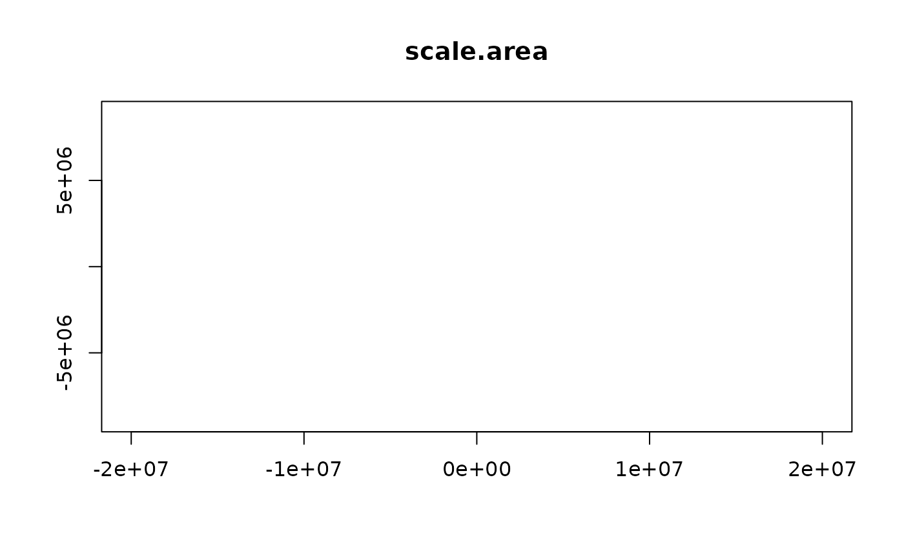
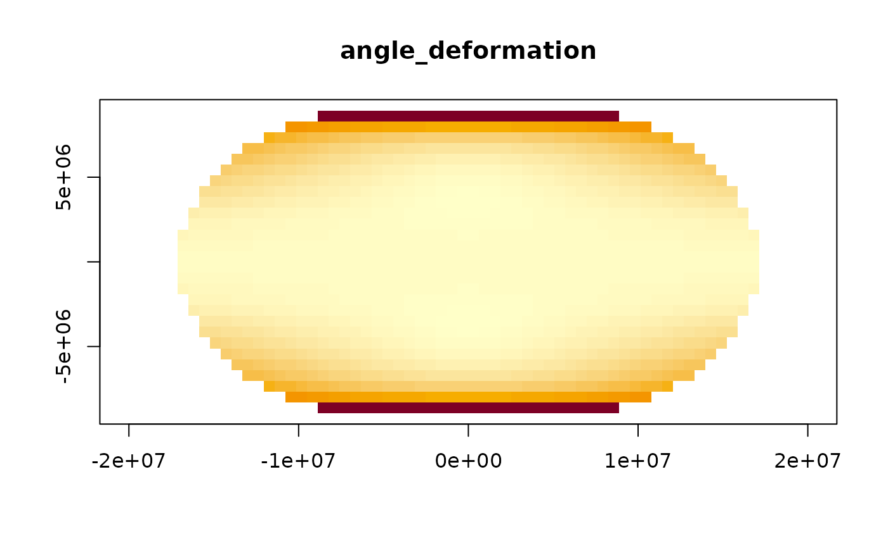
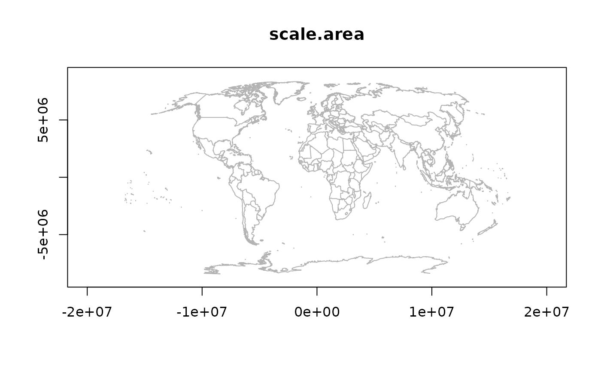
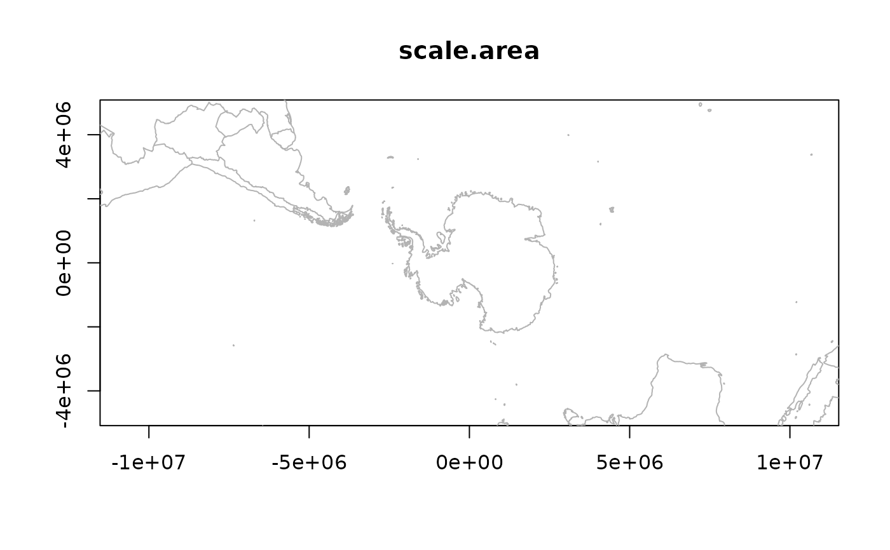

Create a raster-like grid of Tissot distortion metrics in the target
projection. The grid is laid out in projected coordinates, back-projected
to longitude/latitude, and passed through tissot(). Returns a list of
matrices compatible with image() and easily converted to raster objects
(e.g. via terra::rast()).
tissot_raster(
target,
extent = NULL,
radius = 2e+07,
nx = 100L,
ny = NULL,
metrics = c("scale.area", "angle_deformation", "scale.h", "scale.k"),
...,
source = "EPSG:4326"
)
# S3 method for class 'tissot_raster'
image(x, metric = NULL, col = NULL, asp = 1, main = NULL, ...)
# S3 method for class 'tissot_raster'
plot(x, ...)target projection CRS string
numeric length 4: c(xmin, xmax, ymin, ymax) in projected
coordinates. If NULL (default), estimated from the global lonlat
bounding box (clamped by radius).
maximum half-width of the grid extent in projected units
(default 2e7). The auto-detected extent is clamped so that no
dimension exceeds 2 * radius. Prevents blow-up for projections like
stereographic or gnomonic that map the whole globe to huge coordinates.
Ignored if extent is supplied.
integer; number of grid cells in x (default 100)
integer; number of grid cells in y. If NULL, set to maintain
approximately square cells.
character vector of column names from tissot() output to
include as layers. Default includes areal scale, angular deformation,
and meridional/parallel scale factors.
passed to image()
source CRS (default "EPSG:4326")
a tissot_raster (from tissot_raster())
which metric to plot (default: first available)
colour palette (default: hcl.colors(64, "YlOrRd", rev = TRUE))
aspect ratio (default 1)
plot title (default: metric name)
A tissot_raster list with components:
xnumeric vector of x (easting) cell centers
ynumeric vector of y (northing) cell centers
znamed list of ny x nx matrices, one per metric
targetthe target CRS string
extentthe c(xmin, xmax, ymin, ymax) used
The object has an image() method for quick plotting.
If extent is NULL, the function projects the four corners and midpoints
of the \([-180, 180] \times [-85, 85]\) lonlat
bounding box into the target CRS, and uses the resulting range (padded by
5%) as the grid extent.
tissot(), plot.tissot_raster(), image.tissot_raster()
tr <- tissot_raster("+proj=robin", nx = 60)
#> ✖ GDAL FAILURE 1: Point outside of projection domain
#> ✖ GDAL FAILURE 1: Point outside of projection domain
#> ✖ GDAL FAILURE 1: Point outside of projection domain
#> ✖ GDAL FAILURE 1: Point outside of projection domain
#> ✖ GDAL FAILURE 1: Point outside of projection domain
#> ✖ GDAL FAILURE 1: Point outside of projection domain
#> ✖ GDAL FAILURE 1: Point outside of projection domain
#> ✖ GDAL FAILURE 1: Point outside of projection domain
#> ✖ GDAL FAILURE 1: Point outside of projection domain
#> ✖ GDAL FAILURE 1: Point outside of projection domain
#> ✖ GDAL FAILURE 1: Point outside of projection domain
#> ✖ GDAL FAILURE 1: Point outside of projection domain
#> ✖ GDAL FAILURE 1: Point outside of projection domain
#> ✖ GDAL FAILURE 1: Point outside of projection domain
#> ✖ GDAL FAILURE 1: Point outside of projection domain
#> ✖ GDAL FAILURE 1: Point outside of projection domain
#> ✖ GDAL FAILURE 1: Point outside of projection domain
#> ✖ GDAL FAILURE 1: Point outside of projection domain
#> ✖ GDAL FAILURE 1: Point outside of projection domain
#> ✖ GDAL FAILURE 1: Reprojection failed, err = 2050, further errors will be suppressed on the transform object.
#> Warning: 508 point(s) failed to transform, NA returned in that case
image(tr)
#> Warning: no non-missing arguments to min; returning Inf
#> Warning: no non-missing arguments to max; returning -Inf

## specific metric
image(tr, metric = "angle_deformation")

## with coastline overlay
image(tr)
#> Warning: no non-missing arguments to min; returning Inf
#> Warning: no non-missing arguments to max; returning -Inf
tissot_map()

## polar stereo — use radius to cap extent
tp <- tissot_raster("+proj=stere +lat_0=-90", radius = 5e6, nx = 60)
image(tp)
#> Warning: no non-missing arguments to min; returning Inf
#> Warning: no non-missing arguments to max; returning -Inf
tissot_map()
